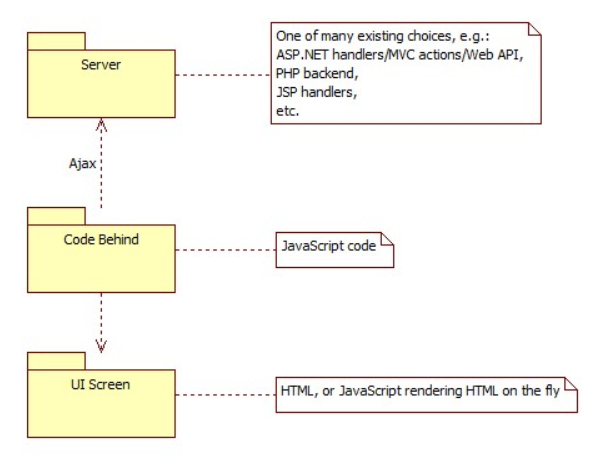
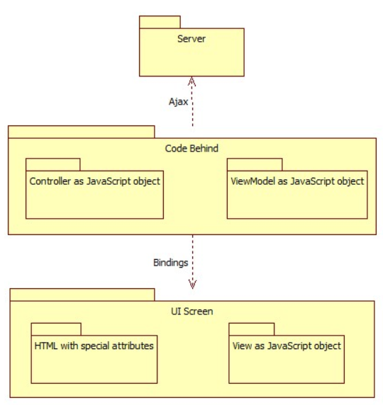

Gelişmiş JavaScript Uygulama Mimarisi
Günümüz dünyasında, istemci tarafında uygulanan web uygulamalarını görmek çok yaygındır, yani uygulamanın mantığının çoğu tarayıcıda çalışır. Bu mümkün çünkü JavaScript gibi harika bir programlama dilimiz var ve ayrıca tüm modern tarayıcılar tam anlamıyla tam teşekküllü uygulamaları barındıracak şekilde inşa edildiğinden. JavaScript uygulamaları (veya çoğunlukla tarayıcıda çalışacak şekilde oluşturulan uygulamalar) çok popüler hale geldi ve onlara olan talebin, bu tür uygulamalar yapan geliştiriciler tarafından kullanılan teknik ve yaklaşımlardan biraz daha ileri gittiğini hissediyorum. JavaScript kullanarak oluşturulan herhangi bir somut uygulama ile ilgili bir sorunum yok, bu ivmenin sonunda bizi nereye götüreceği konusunda sadece belirli bir vizyonum var. Özellikle, karmaşık uygulamaların mimarileri açısından. Bu konuda ele alacağım şey bu.
Tipik JavaScript Uygulama Mimarisi
Tipik olarak, JavaScript uygulamaları aşağıdan yukarıya doğru oluşturulur - önce bir tür ekran maketi veya prototipimiz vardır; daha sonra bu ekranlar, ekran manipülasyonları, veri oluşturma, güncellemeler, silme vb.Ile ilgilenen kodlarla bağlanır. Kısacası, kullanıcı arayüzü her zaman gelişimin merkezinde yer alır. Bu kesinlikle iyi, çünkü böyle bir yazılım uygulamanın ekranlarıyla etkileşime giren kullanıcıların beklentilerini karşılamak için tasarlandı. Bununla birlikte, bu odak, geliştiricilerin uygulamanın mimarisi hakkında doğru kararlar almalarına tam olarak yardımcı değildir.
Yukarıdaki çizim, bugüne kadar yapılmış JavaScript uygulamalarının çoğunun nihai mimarisini göstermektedir. Oldukça basit bir resim ve basit uygulamalar için bu tamamen kabul edilebilir. Ancak karmaşık uygulamalar, bu mimariden uzun vadede faydalanamaz. Karmaşıklığın sürekli büyümesiyle, bu tür basit mimari, endişelerin ayrılması, katmanlama, SOLID kodu, birim test edilebilirliği, sürdürülebilirlik, genişletilebilirlik vb.Gibi olgun uygulamaların karşılaştığı talepleri karşılayamaz. Bu zorluklar, karmaşıklığın artması ve son tarihlerin daralmasıyla, gelişimin erken aşamalarında belirlenmez ve çözülmezse, uygulamaya daha fazla özellik ekleme görevi kaynaklar, zamanlama ve bütçe açısından çok maliyetli olabilir.
Çerçeve Tabanlı Tipik Mimari
Dünya daha olgun JavaScript uygulamaları ve mimarileri için bir talep olduğunu fark ettiğinden, bu sorunu çözmek için birçok çerçeve gelişti. Birçok yönden yardımcı olurlar - sizin için ayrıştırarak basit veya okunabilir HTML işaretlemeleri sağlayın; basit kod blokları ile HTML işaretlemesini birçok şekilde oluşturup dönüştürmek; sunucu tarafı işleyicileriyle sorunsuz bir şekilde tümleştirin. Temel olarak, yukarıdaki basit mimariyi daha da detaylandırarak atılım yaptılar.
Yukarıdaki çizim, tüm bu ilerlemelerin bu noktada nerede olduğunu göstermektedir. Kısacası, bu uygulamaya MVC veya MVVM şablonunun uygulanmasının sonucudur. Ve gerçekten de, popüler JavaScript kullanıcı arayüzü çerçevelerinin çoğu bu 2 uygulama modelinden birini savunuyor.
UI ekranı hala son teslimatın odağı olsa da, Parçanın arkasındaki kod (MVC Denetleyicileri veya MVVM ViewModels) artık daha gelişmiş. Davranışsal endişeleri yalnızca sunum endişelerinden ayırmakla kalmaz, aynı zamanda iş mantığının UI ekranlarından kapsüllenmesi, birim test edilebilir kod blokları (Denetleyici veya ViewModel birim test edilebilir), sürdürülebilirlik vb. Gibi birçok değer sağlarlar.
Birçok uygulama geliştiricisi ve mimar, bu tür mimarileri öneren çerçeveler almış ve yazılımlarını uygulamak için harika bir iş çıkarmıştır. Bunun hem çerçeve yazarlarının hem de belirli projelerin uygulayıcılarının bir başarısı olduğunu söylemeliyim ki, bu tür yaklaşımların iyi çalıştığını kanıtlamışlardır. Bu doğrudur ve birçok JavaScript uygulaması için geçerli kalacaktır. Bir sonraki bölümde, karmaşık JavaScript uygulamalarının nasıl tasarlanması gerektiğini düşündüğümü açıklamama yardımcı olacak çerçeve tabanlı tipik mimariyi açıklığa kavuşturmak istiyorum.